| Plan | Hypothesis | Tests Passed | Statistical Models | ML Models |
|---|---|---|---|---|
| experiment_plan_f5361333fc9a | Thalamocortical Coupling and Default Mode Network Dysregulation Interaction in Insomnia | 2/4 | linear_regression | decision_tree_regressor,random_forest_regressor,svm_regressor,xgboost_regressor,lightgbm_regressor |
| Plan | Hypothesis | Stage | Reason |
|---|
Effect size and p-value matrix across all primary predictor/outcome tests.
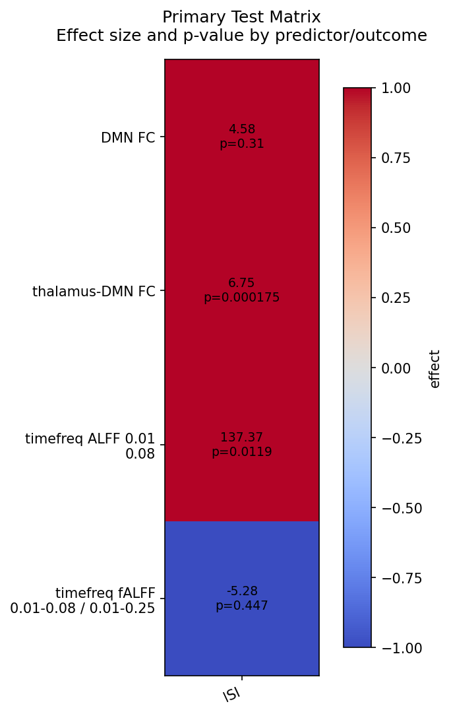
Full variable pair: thalamus_DMN_FC -> ISI.
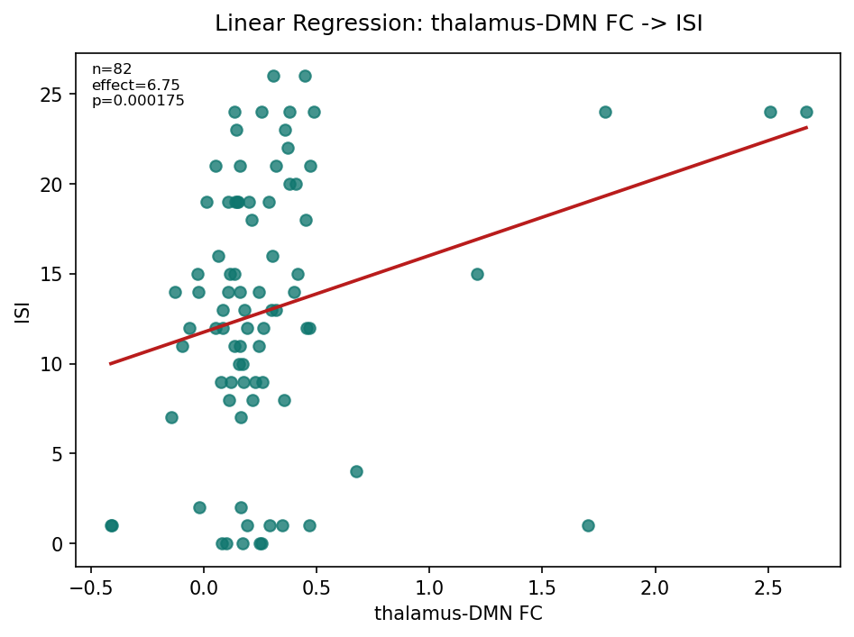
group_specific_scatter_experiment_plan_f5361333fc9a_thalamus_DMN_FC_ISI.png
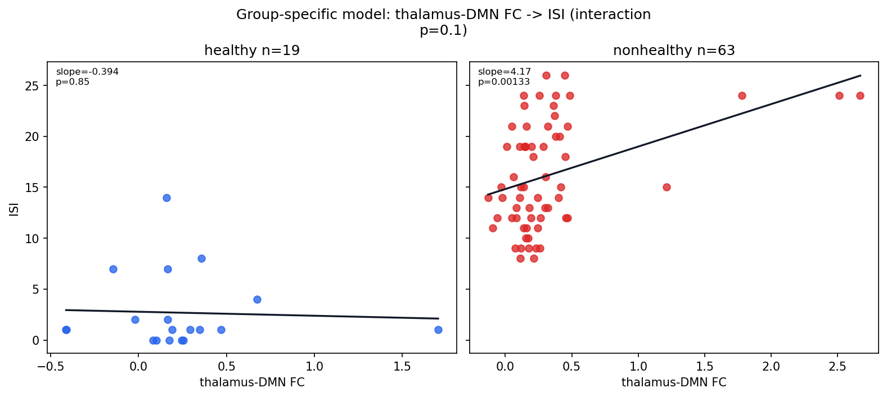
Full variable pair: DMN_FC -> ISI.
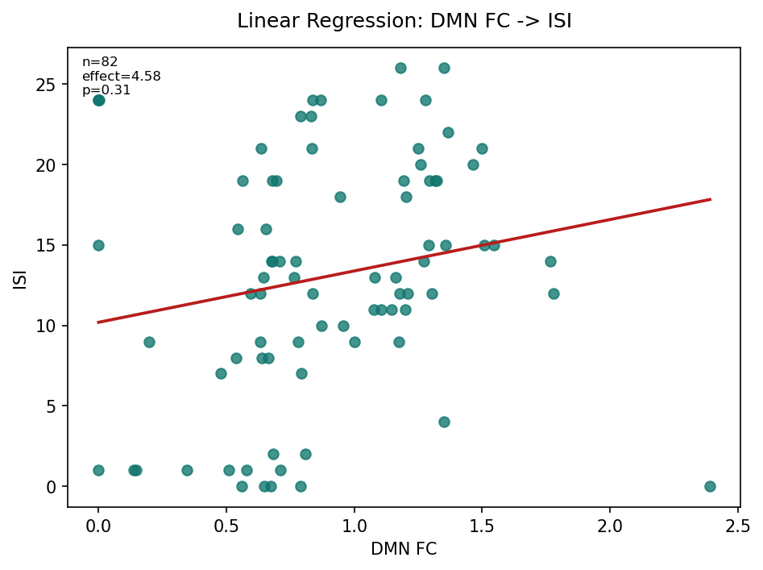
group_specific_scatter_experiment_plan_f5361333fc9a_DMN_FC_ISI.png
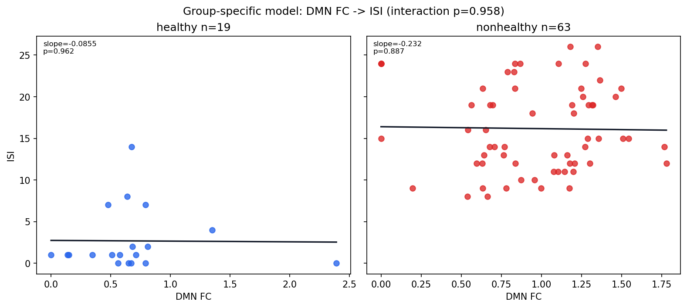
Full variable pair: timefreq_fALFF_0.01_0.08_over_0.01_0.25 -> ISI.
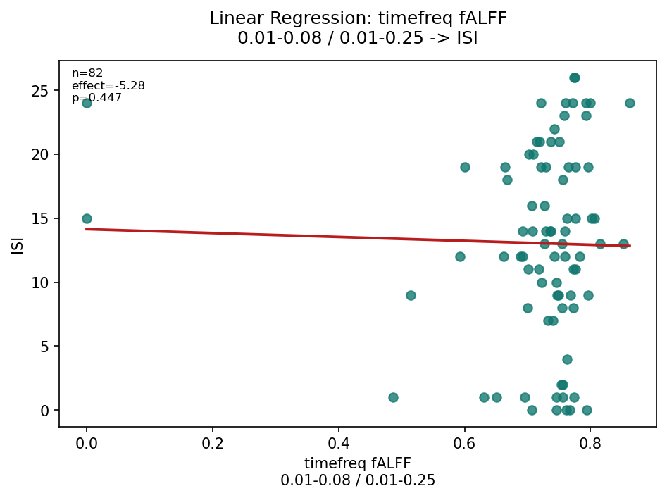
group_specific_scatter_experiment_plan_f5361333fc9a_timefreq_fALFF_0_01_0_08_over_0_01_0_25_ISI.png
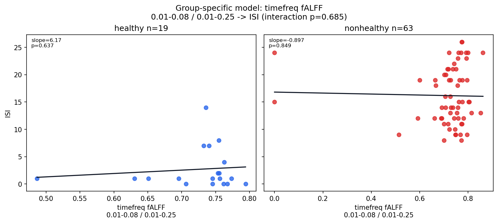
Full variable pair: timefreq_ALFF_0.01_0.08 -> ISI.
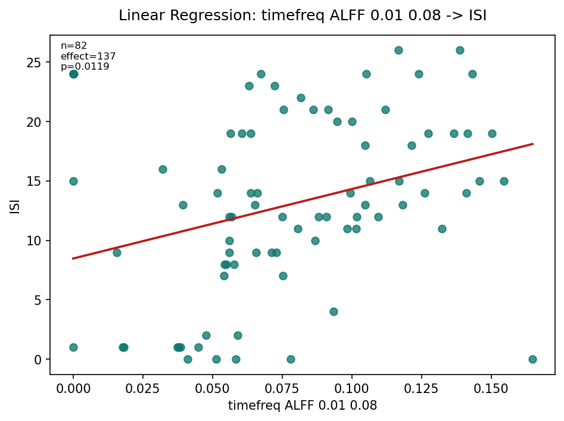
group_specific_scatter_experiment_plan_f5361333fc9a_timefreq_ALFF_0_01_0_08_ISI.png
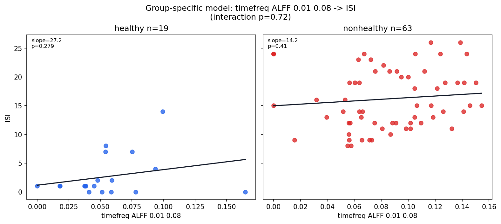
Bootstrap sign stability for each primary test. Labels show predictor/outcome pairs rather than internal test ids.
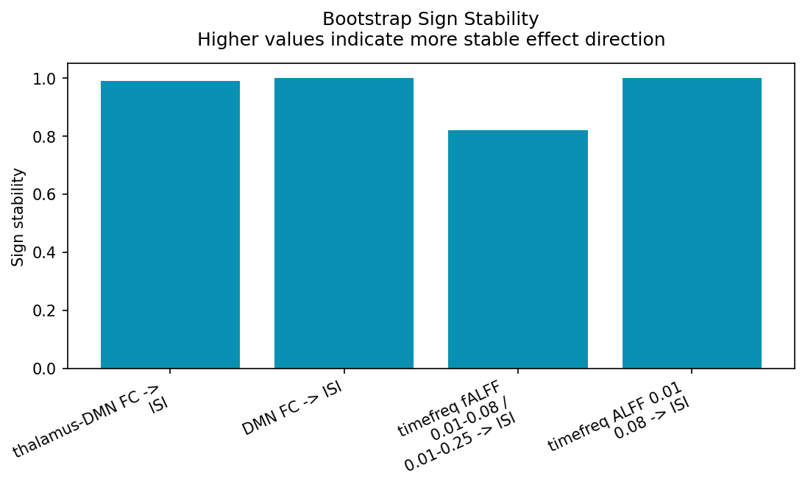
Negative controls: green=passed negative control; red=failed negative control. Bars show effect estimates; p-values are not available in the current negative-control result schema.
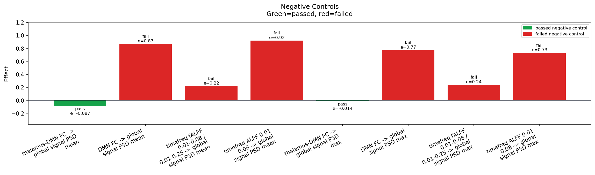
Missing rate for variables used by this experiment plan.
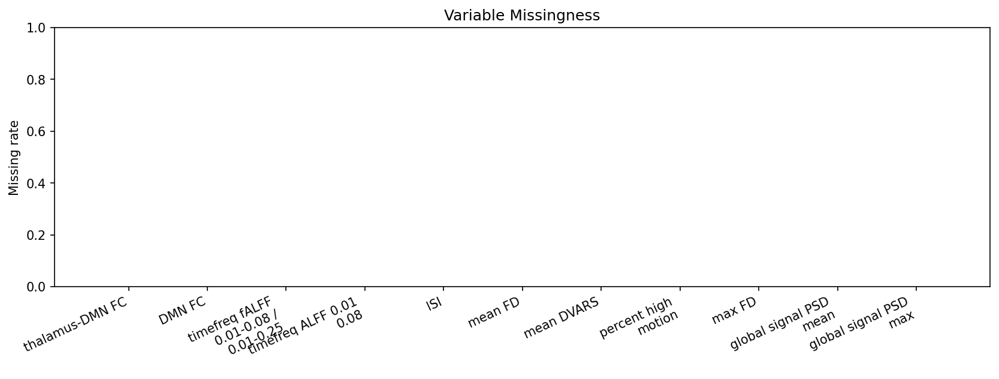
Feature importance from the selected machine-learning model.
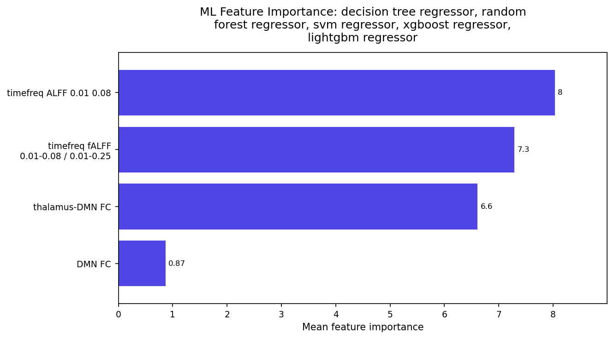
Predicted versus observed regression outcomes.
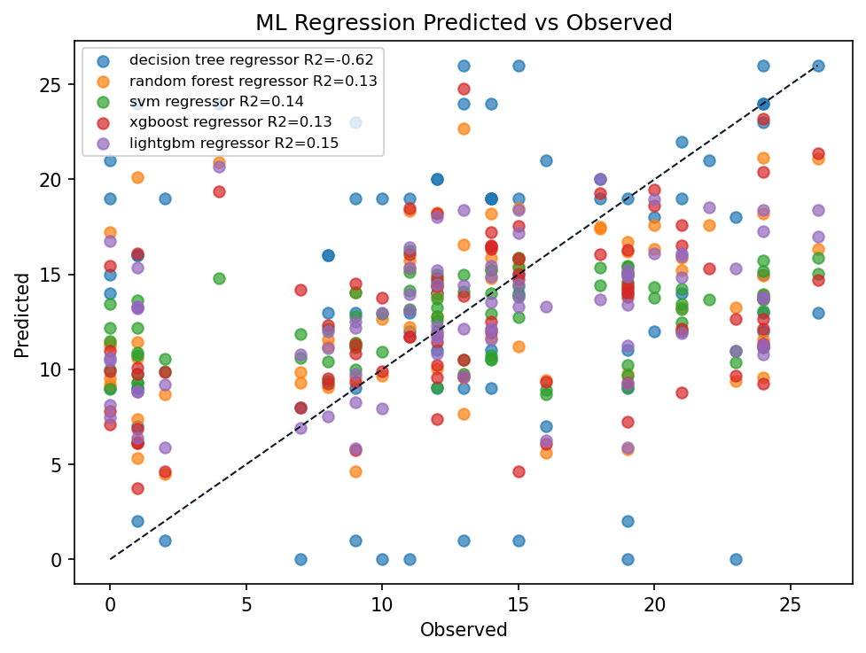